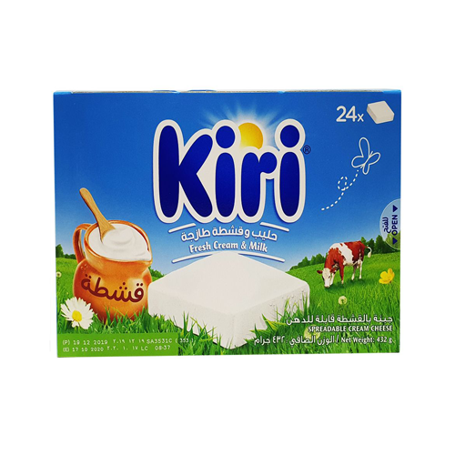
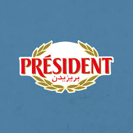
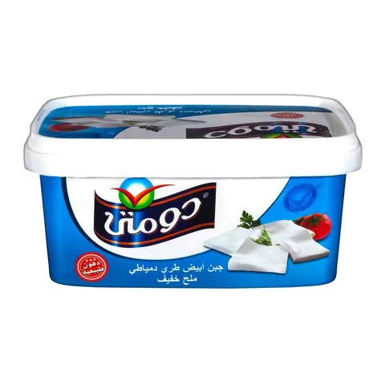
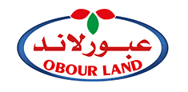
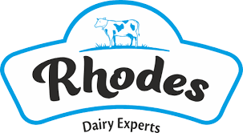

Cheese
Abo Elwalad

Abu Walad Triangle Cheese - جبنه ابو ولد Spreadable Cheese Analogue - Milk Fat was replaced by vegetables oils. 50% fat in dry matter . Sterilized. Processed cheese triangles. Rich in vitamins, proteins, and calcium. Details:* 8 triangle portions in one pack.* Net Weight is 120g. * Imported from Saudi.
Kiri
The first ever cheese catering to a child’s palette is launched by the name of Kiri. The indulgent and convenient little square almost instantly became a favourite with kids in France and soon, the world. Kiri was launched in the region as a breakfast essential for the whole family and has since evolved to be an unmissable cooking partner for every Arab mum.
President
Founded by André Besnier in 1933 in the town of Laval, France, in the Loire Valley, we bring over 75 years of French artisanship and tradition, and the widest range of specialty cheeses, including the largest array of AOC (appellation d’origine contrôlée) cheeses.
La Vache Quirit

On April 16, 1921, Léon Bel trademarked his brand, as La Vache Qui Rit, in France. Bel had made the original drawing himself, after seeing a travelling meat wagon during World War I called "La Wachkyrie", a play on the word for Valkyrie.
Domty
Established in 1990, the Arabian Food Industries Company had a humble beginning offering a modicum of products with only two types of white and mozzarella cheeses, respectively. Since then its flagship cheese brand, Domty, has grown to hold an unparalleled position amongst market competitors.
ObourLand
Obourland for food industries is a leading Egyptian manufacturer specialized in the production ,processing and packaging of white cheese. When Eng. Mohammed Hamed Sherif Established the company in 1995, he had a vision to introduce the market a new business model for food production that relies on innovation as its core from day one.
Mazare Dina

Gozour acquires Dina Farms which at the time had a total herd count of 8,781 and 6 milking units (3,780 milking cow). The company upgraded 5 milking stations with DeLavalIt later acquires 235 acres located within the company's land, with herd count 654 and a milking unit.
Rhodes
Rhodes Cheese is produced by Al Borouj for food industries, a sister company of Badawy Group for food industeries, the owner of Al Arousa Tea and Hawaa Pasta trade marks. For more than 55 years, food industries have been occupying a special place in Badawy Family business, through which they have been recording stages of development and care for achieving the maximum product quality that consumer is looking for.